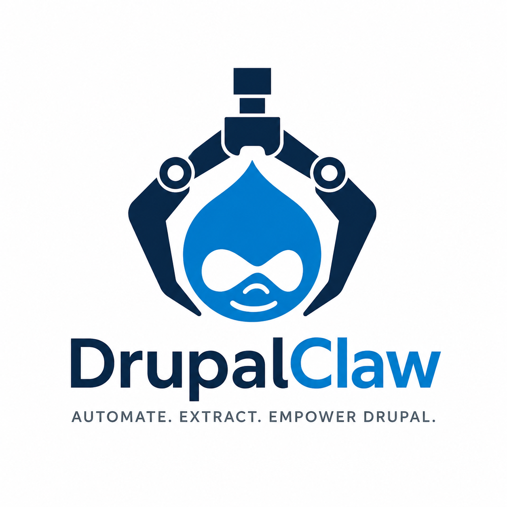

An agent-first workspace for Drupal development. AI-powered, containerized, with 14 built-in skills and a visual Dev Panel.
DrupalClaw is a self-hosted, agent-first workspace built on PiClaw. It packages an AI coding agent with a complete Drupal development stack into a single Docker container.
Talk to the agent in natural language. It creates projects, manages Docker stacks, runs Drush, scaffolds modules, analyzes code, fixes errors, imports databases — all through a unified chat interface with a visual Dev Panel.
Everything you need in a single container
Chat with an AI agent that understands Drupal. Create projects, debug errors, manage modules, run Drush — all in natural language.
One-click buttons for common tasks: start stack, cache rebuild, analyze code, export database. Fully customizable via JSON config.
Production-like environment with nginx + PHP-FPM + MariaDB/PostgreSQL/SQLite. Managed through sibling containers via Docker socket.
Pre-configured commands for the entire Drupal lifecycle: init, serve, modules, analysis, fixes, database, logs, debugging, performance.
PHPStan and PHPCS/PHPCBF integrated via skills. Analyze custom code for errors, then auto-fix coding standard violations.
Runs on your machine or server. Your code stays local. Based on PiClaw — fully open source and extensible.
Pre-configured commands the agent executes on demand
Visual shortcuts — click to execute, fully customizable
Click to execute commands
One container orchestrates everything
AI Agent + Dev Panel
PHP 8.3 + Composer + Drush
Sibling containers
managed from inside
Production-like stack
Volume-mounted code
MariaDB / PostgreSQL
or SQLite
Up and running in 3 commands
Open source, self-hosted, agent-first. Start building with AI today.